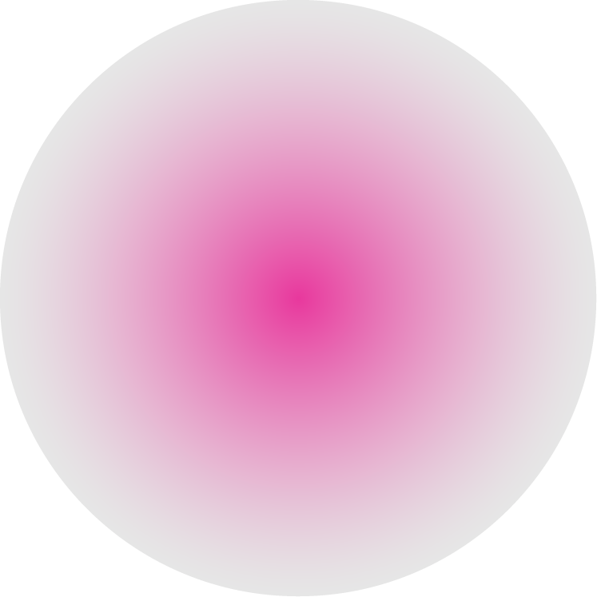

02 - GRAMMAR - {The Period/Full Stop}Point ; Mark The End of A Declarative Sentence
02 - GRAMMAR - {The Period/Full Stop}Point ; Mark The End of A Declarative Sentence
02 - GRAMMAR - {The Period/Full Stop}Point ; Mark The End of A Declarative Sentence
{온}점

문장을 마칠 때 사용하는 문장 부호
일반적으로 대부분 언어에서 마침표를 {온}점(.)으로 쓴다. 중국어, 일본어 등에서는 고리점(。)을 사용한다. 한국에서는 가로쓰기에는 {온}점(.)을 쓰고 세로쓰기에는 고리점(。)을 썼으나, 최근에는 가로쓰기가 대부분이라, 결국 2015년 1월 1일 한글 맞춤법 부록: 문장부호 규정에서 모점(、)과 함께 삭제되었다.
일반적으로 대부분 언어에서 마침표를 {온}점(.)으로 쓴다. 중국어, 일본어 등에서는 고리점(。)을 사용한다. 한국에서는 가로쓰기에는 {온}점(.)을 쓰고 세로쓰기에는 고리점(。)을 썼으나, 최근에는 가로쓰기가 대부분이라, 결국 2015년 1월 1일 한글 맞춤법 부록: 문장부호 규정에서 모점(、)과 함께 삭제되었다.

1. 2015년 1월 1월부터 { }점 대신 ‘마침표’가 바른 명칭이 되었다.
2. 한국·중국·일본 중에서 한국만 공식적으로 서양식 { }점을 사용하고 있다. 중국과 일본은 고리점(。)을 사용한다.
3. { }점을 축약의 의미로 사용할 땐, 모든 축약 글자 뒤에 마침표를 찍거나 하나도 찍지 않아야 한다. 같이 연습해보자.
연습1. U.S.A{ }
연습2. W.H.O{ }
연습3. H.O.T{ }